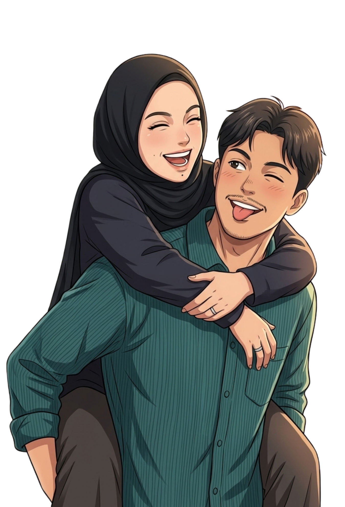
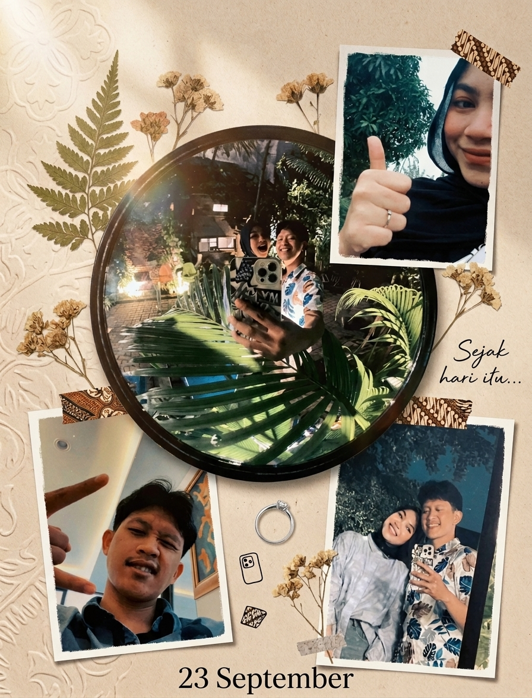
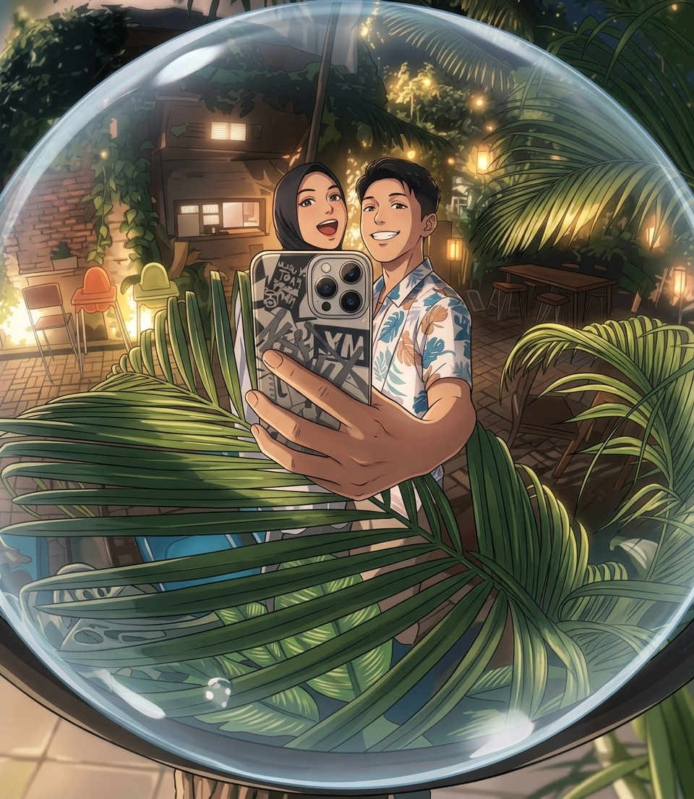
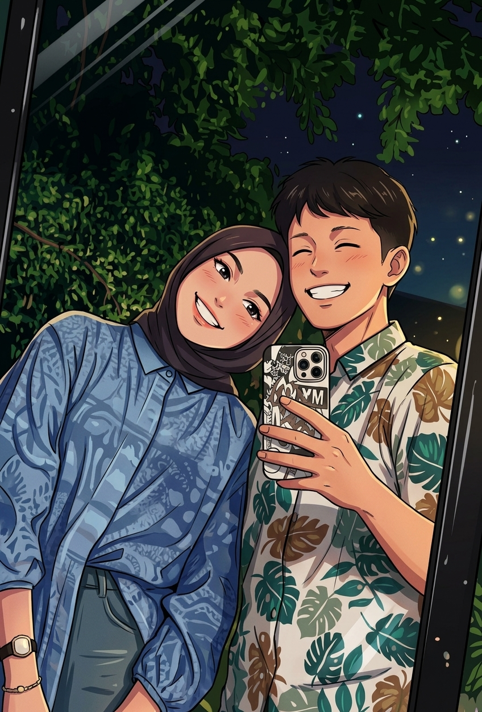

Dijodohin Ayah
Awalnya aku bahkan belum mikir sejauh itu tentang kamu.

us, in another little universe ✦23 SEPTEMBER 2025 — 23 SEPTEMBER 2026
One year ago, I didn't know that a random number, a little awkwardness, and a lot of small conversations would quietly lead me to you.
CHAPTER 01 · BEFORE “US”
Lucunya, semua ini malah berawal dari Ayah yang lebih dulu punya ide. Waktu itu aku belum terlalu tertarik. Biasa aja. Nggak ada firasat kalau nanti kamu bakal jadi orang yang paling sering aku cari.
Tapi hari demi hari, aku mulai suka ngelirik kamu. Ternyata kamu cantik. Terus tiap kamu salting waktu lihat aku, entah kenapa aku malah senang. Ada sesuatu yang sederhana dari kamu yang bikin suasana jadi lebih ringan.

CHAPTER 03 · SOMEHOW, IT BECAME HOME
Awalnya aku bahkan belum mikir sejauh itu tentang kamu.
Kemudian aku sadar: ternyata lihat kamu bisa bikin mood aku bagus.
Dari sedikit prank, lahir alasan buat akhirnya benar-benar kenalan.
Dari basa-basi, jadi saling dengar. Dari cerita kecil, jadi saling support.
Dan akhirnya, ada tanggal yang sejak itu selalu punya arti lain buat kita.
CHAPTER 04 · OUR LITTLE UNIVERSE
Nggak semua momen harus besar buat jadi berarti. Kadang cuma foto random, senyum di kaca, atau satu malam biasa yang ternyata jadi kenangan favorit.


Kalau suatu hari kita lupa detail-detail kecilnya, semoga foto-foto ini selalu bisa ngingetin kalau kita pernah sebahagia ini di hari-hari yang sederhana.
ONE YEAR WITH YOU
days since “us” began.
Bukan 365 hari yang semuanya sempurna. Tapi 365 hari di mana kita belajar mengenal versi satu sama lain yang nggak selalu rapi—dan tetap memilih buat ada.
WHAT I LOVE ABOUT US
Aku suka waktu kita bisa bar-bar, ketawa nggak jelas, dan nggak perlu kelihatan sempurna di depan satu sama lain.
Aku pengen selalu jadi tempat kamu merasa aman, tenang, dan tahu kalau ada seseorang yang berdiri di sisi kamu.
Cara kamu salting, ekspresi kamu, obrolan random, sampai kejutan-kejutan kecil yang bikin hari biasa jadi punya cerita.
23 September 2026
Bee, aku mungkin nggak selalu paling jago nyusun kata-kata. Tapi satu hal yang aku tahu: setelah satu tahun ini, aku masih mau punya banyak hari berikutnya sama kamu.
Aku mau kita tetap punya ruang buat tumbuh, buat salah, buat belajar, buat saling tegur, buat saling dukung, dan tetap punya alasan buat pulang ke satu sama lain setelah hari yang panjang.
Aku nggak cuma pengen merayakan tanggal 23 September tiap tahun. Aku pengen suatu hari nanti kita bisa lihat ke belakang dan bilang: ternyata dari nomor yang “salah” itu, kita berhasil membangun sesuatu yang benar.
Semoga langkah kita sampai pada hari di mana “pacaran” berubah jadi rumah, janji berubah jadi kehidupan bersama, dan rambut kita pelan-pelan memutih. Dan ketika suatu hari waktunya masing-masing pulang kepada-Nya, semoga kita pernah menjalani hidup ini dengan baik—bersama.